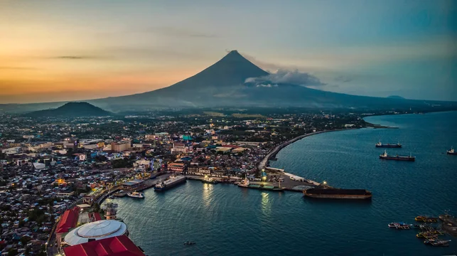
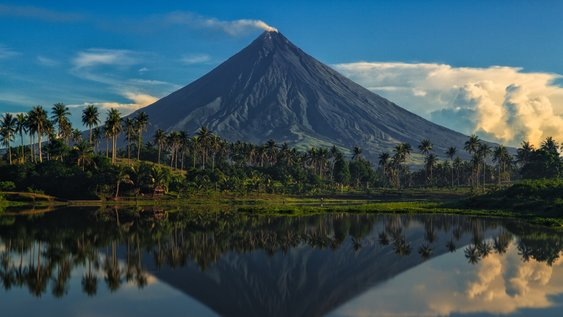
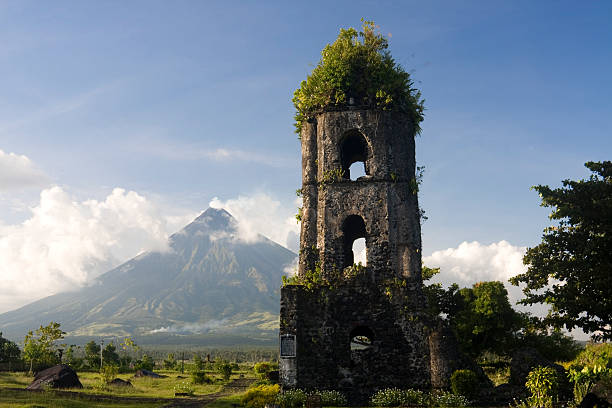

History of Mayon Volcano
Mayon Volcano is an active stratovolcano located in the province of Albay, Philippines. It is renowned for its near-perfect conical shape and is considered one of the most beautiful volcanoes in the world. Mayon's beauty is contrasted by its destructive power, as it has erupted over 50 times in the past 400 years.
The volcano holds a significant place in Philippine mythology and culture, with local legends telling tales of its formation. Despite its volcanic activity, Mayon Volcano is a popular tourist destination, offering visitors stunning views and the opportunity to explore its natural wonders.



Watch a Video of Mayon Volcano
Explore the majestic beauty of Mayon Volcano by watching this video by Kuya Arjay: